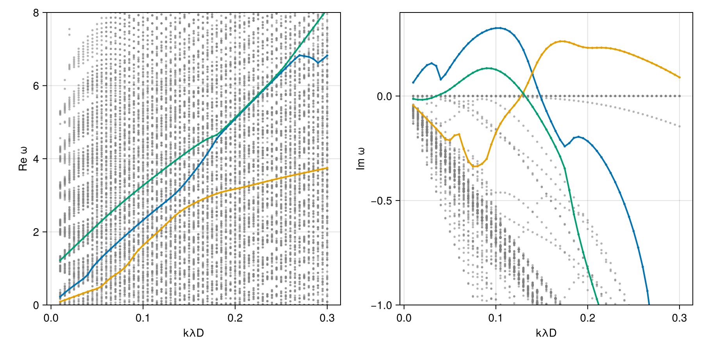

Case: Ring beam instability
This page demonstrates how to use the package to solve kinetic dispersion relations for the ring beam instability Umeda et al. [5].
Simulation Parameters
- Background Magnetic Field: $B_0 = 96.24$ nT
- Species:
- Ring Beam Electrons ($10\%$)
- Density: $n_r = 0.1 n_0$
- Temperature: $T_r = 51$ eV
- Drift Velocity: $v_{d,z} = 0.1 c$, $v_{d,\perp} = 0.05 c$
- Background Electrons ($90\%$)
- Density: $n_b = 0.9 n_0$
- Temperature: $T_b = 51$ eV
- Drift Velocity: $v_{d} = 0$
- Ring Beam Electrons ($10\%$)
using PlasmaBO
using PlasmaPopulations: gyrofrequency, thermal_speed, debye_length
using Unitful
# Umeda 2012 ring beam configuration
B0 = 96.24e-9 # [Tesla]
e = Electron()
T = 51u"eV"
vth = thermal_speed(e, T)
plasma = Plasma(
# Ring beam electrons (10% density): parallel drift `vd`, ring speed `vr`
Population(e, GaussianRing(; vr_perp = 0.05u"c", w_perp = vth, vth_para = vth, vd_para = 0.1u"c"); n = 1e5),
# Background electrons (90% density)
Population(e, BiMaxwellian(; vth); n = 9e5);
B0,
)
# Compute normalization
wce = abs(gyrofrequency(e, B0))
lambdaD = debye_length(e, 1e6, T) # of the total electron density
kn = 1 / lambdaD
# Wave vector: k*λD = 0.03, θ = 40°
k = 0.03 / lambdaD
θ = deg2rad(40)
kx = k * sin(θ)
kz = k * cos(θ)
# J=12 provides good accuracy (J-pole approximation order)
ωs = solve(DispersionProblem(plasma, Wavevector(kx, kz)), BOHH(; N=6, J=12)).omega
# Filter for unstable modes (ω/ωce) with positive growth rate
ω_unstable = filter(ω -> isfinite(ω) && imag(ω) > 0.001*wce, ωs)[1] ./wce0.6229290801637501 + 0.1568774919092315imDispersion Curve Scan
Every eigenvalue over 0.01 ≤ kλD ≤ 0.3, linked into branches; the unstable ones are found without seeds:
sweep = AngleSweep(; k = collect(0.01:0.005:0.3) .* kn, theta = θ)
survey = solve(DispersionProblem(plasma, sweep), BOHH(; N=6))
unstable = filter(isgrowing, link(survey))
[maximum(imag, b.omega) / wce for b in unstable] # peak growth rates3-element Vector{Float64}:
0.32542926572616593
0.261984895299089
0.13313363827469724The unstable branches over every root (gray), zoomed by axis limits:
using CairoMakie
fig, (axr, axi) = dispersion_diagram(survey; k_unit = kn, omega_unit = wce, xlabel = "kλD")
dispersion_diagram!((axr, axi), unstable; k_unit = kn, omega_unit = wce)
ylims!(axr, 0, 8)
ylims!(axi, -1, 0.4)
fig